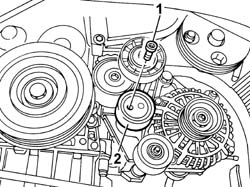

1092G21 ENGINE COMPONENT SINGLE BELT FIXED TENSIONER - R RWITH BELT REMOVED
- Path
- Procedures > 10 ENGINE UNIT > 1092 VARIOUS ENGINE COMPONENT CONTROLS > 1092G SINGLE DRIVE BELT FOR VARIOUS ENGINE COMPONENTS > 1092G21 ENGINE COMPONENT SINGLE BELT FIXED TENSIONER - R RWITH BELT REMOVED
- Kind
- repair procedure (removal / refitting; the operation number is the code)
- Applies to
- engines: 2.0 JTD 8V; all production periods
- Interactive page
- https://sloeber94.github.io/elrnDB-fDct/en/#/244000997
Applies to: engines: 2.0 JTD 8V; all production periods
 Removing
Removing
 Refitting
Refitting1. Undo the fixing bolt.
2. Remove the fixed tensioner.

Applies to: engines: 2.0 JTD 8V; all production periods
Refitting
Removing- Fit the single components belt fixed tensioner and secure it tightening the bolt to torque.
 | Value - daNm | Fastening | Component | Ø |
|---|---|---|---|---|
. | - | Bolt | SINGLE BELT FIXED TENSIONER VARIOUS | - |